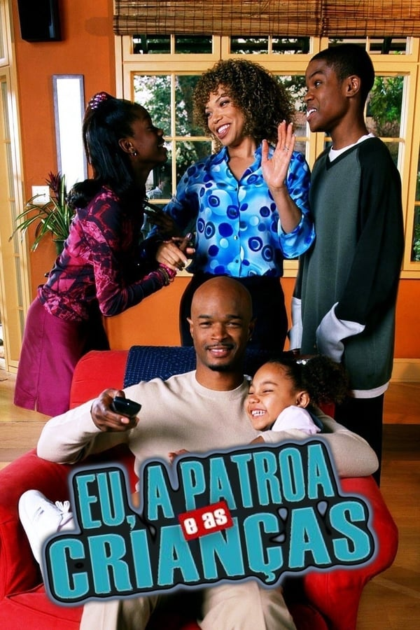

Jay Kyle precisa se dedicar exclusivamente a carreira na contabilidade, porém Michael acredita que esse não é o melhor caminho para Jay, pois acredita que a mesma usa do trabalho para desvirtuar-se de sua família. A menina Kady está sob os cuidados da babá Rosa, uma mulher mexicana que nunca caiu aos encantos do patrão. Claire vive o período da pré-adolescência e costuma ser um pouco arrogante em suas atitudes. Júnior demonstra seu gosto pelo Hip-Hop, porém é desvirtuado da ideia pelo seu pai, que costuma extrapolar, quando o quesito é disciplina.
